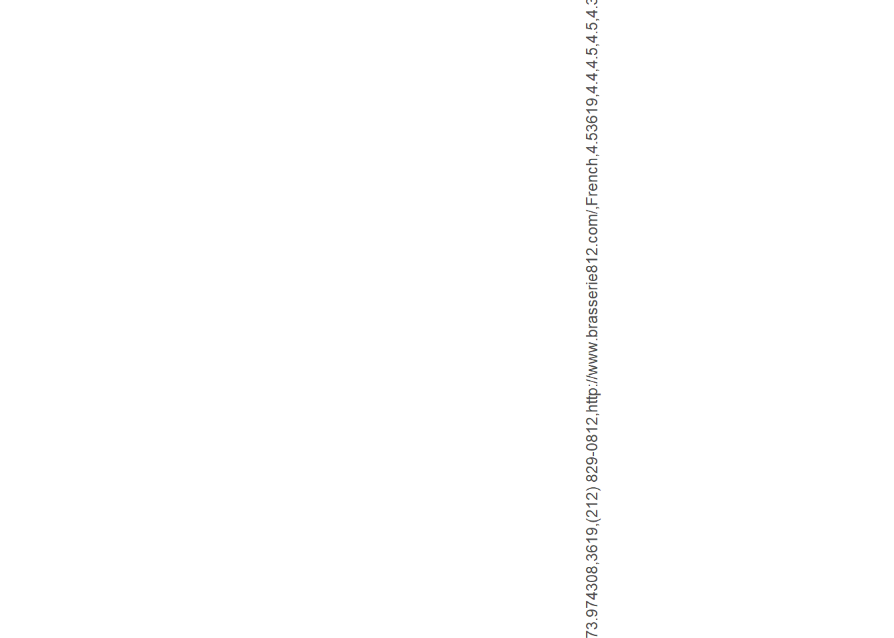
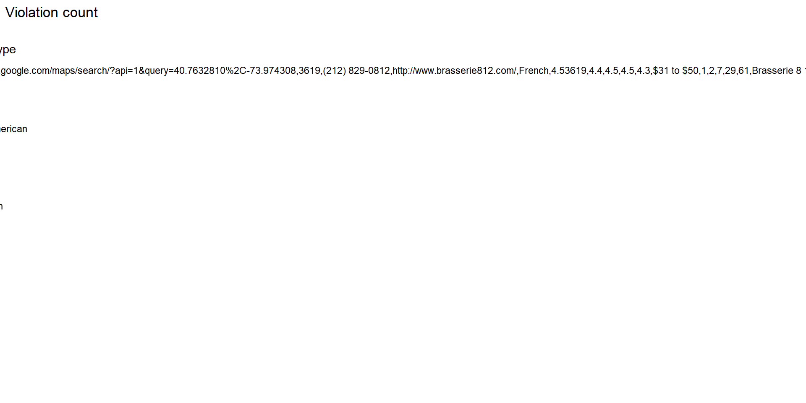
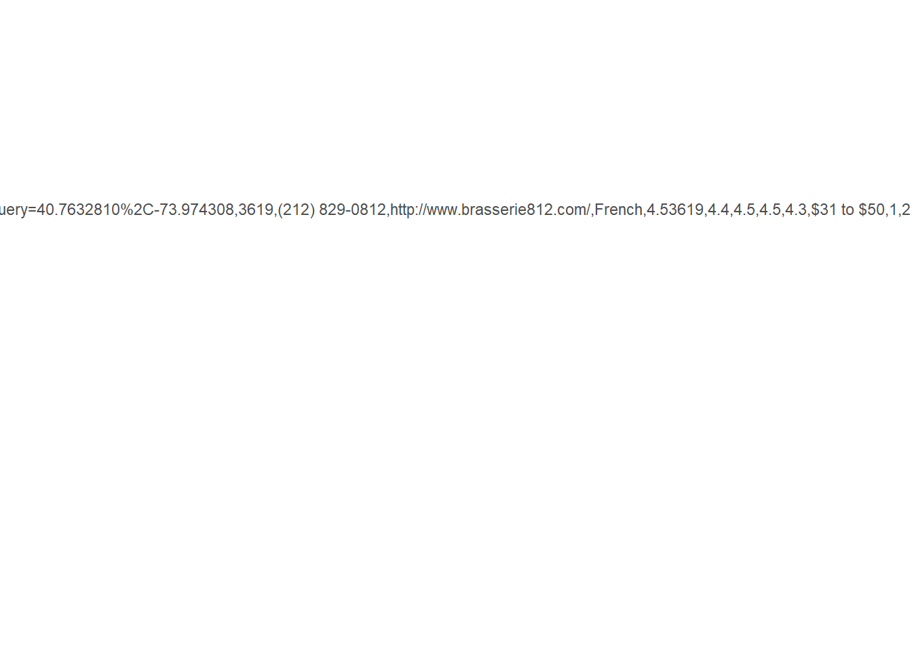
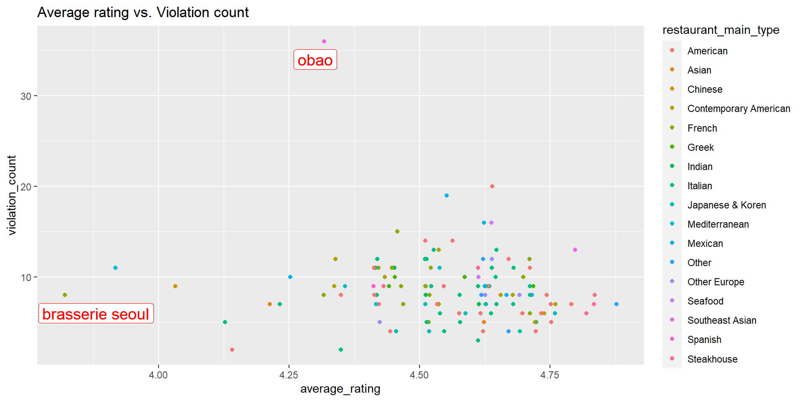
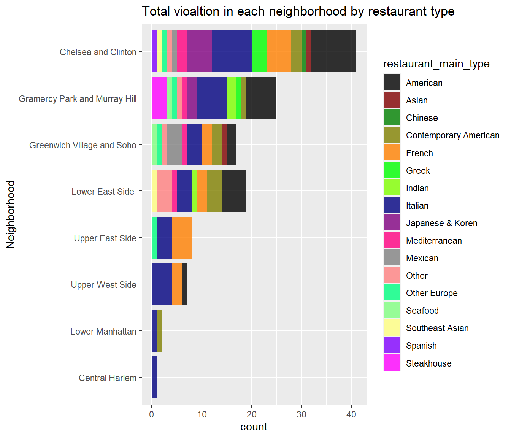

Chapter 5 Results
First, we’d like to see what are the main types of restaurants in NYC Restaurant Week. The following is a plot of the number count for each restaurant type.

Not to our surprise, Italian restaurants are the most common restaurants in NYC Restaurant Week, followed by American and Steakhouse.


Then, we try to explore the relationship between restaurant average rating and inspection violation counts. To do that, we used violation created in data transformation, which contains both the restaurant ratings and the number of violations to plot the following scatterplot. Each restaurant is colored by their type.

There is a major cluster in the bottom-right section of the graph, from average review of 4.4 to 4.75, and violation count from 4 to 8. This cluster represents that most of the restaurants attending restaurant week have relatively high ratings and few violations. However, the graph does not show any linear relationship between average rating and violations. It is also noticeable that there is an outlying restaurant with many violations but relatively low rating, so we think customers should pay special attention to that restaurant. We also labeled the worst rated restaurant in our data.
Meanwhile, we are interested in what types of restaurants have the most violations. So we plotted the following Cleveland dot plot.

As seen from above Southeast Asian restaurants have the most average violations over all the restaurant. We believe it is a reasonable result given the size of our data set and that Obao, the Southeast Asian restaurant, has abnormally more violation than other restaurants. Other than that, Seafood and Mexican restaurants have the second and third most violations. Most types of restaurants have around 5 to 10 violations.
By the way, we are giving a big shoutout to Italian restaurants. They have the most numbers of restaurants, but lower average violations to most types of restaurants. Good job keeping that dishes clean, Italian restaurants!
